Hong Kong Institute of Information Technology
Higher Diploma in Software Engineering (IT114105)
Module: Contemporary Topics in Software Engineering (ITP4507)
Assignment One
Student name: 咲戀
Student number: ____________________
Date: 10 November 2026
The menu tokens in the assignment are fixed. The program follows them and makes the following decisions where the specification is silent.
c, sf, cn, and the rest). Fleet type codes are not: v and V both create a delivery van fleet, and r and R both create a refrigerated truck fleet.id, name. The name is everything after the first comma, with surrounding spaces removed. A fleet name may contain spaces. CENTRAL EXPRESS is one name.Heading: NIL. Drivers in a group stay in the order they were added. Undoing a delete puts the driver back at the same index.Vector is the concrete AbstractList used for the drivers of a fleet. The system keeps everything in memory. Nothing is written to a file.The program is a single-user console application. Main prints the menu, asks CommandFactory for a command, and executes it. FleetManager is the receiver: it holds the fleets in creation order and the current fleet. All source files are in the default package so that run.bat can compile them with javac *.java and start them with java Main.
The classes supplied by the brief are kept. VehicleFleet is abstract. updateDriverRole() and showFleet() are abstract operations. DeliveryVanFleet and RefrigeratedTruckFleet implement them and own their role constants. Driver still stores the role as an int. The fleet, not the driver, knows what that integer means.
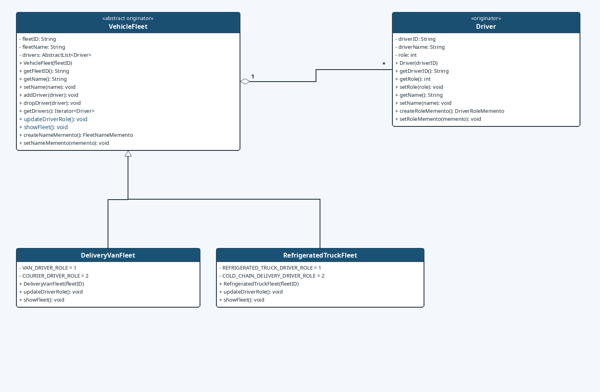
VehicleFleet aggregates drivers. The two concrete fleets inherit the common operations and implement the abstract ones. Italic operations are abstract.Commands never mention DeliveryVanFleet or RefrigeratedTruckFleet. They call updateDriverRole(), showFleet(), getRolePrompt(), and getRoleListName() on a VehicleFleet. Each subclass accepts only its own role codes and supplies its own headings, history phrase, and creation message.
A motorcycle-delivery fleet, or an electric-cargo-bike fleet, can be added without editing those commands:
VehicleFleet. Give it role constants, and implement updateDriverRole(), showFleet(), and the title methods.FleetComponentFactory and creates that fleet and its drivers.Main, next to the two factories that are already registered.The type prompt is built from the registered factories, in registration order. With the two current factories it is exactly v = delivery van | r = refrigerated truck. A third registration appears in the prompt on its own. The existing fleet classes and the command classes stay closed.
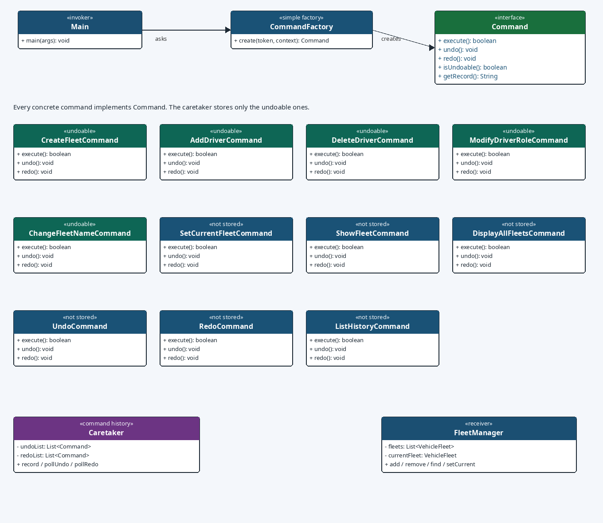
Main is the invoker. CommandFactory creates the concrete commands. Green commands are stored by the caretaker. Blue commands run and are then discarded. FleetManager is the receiver.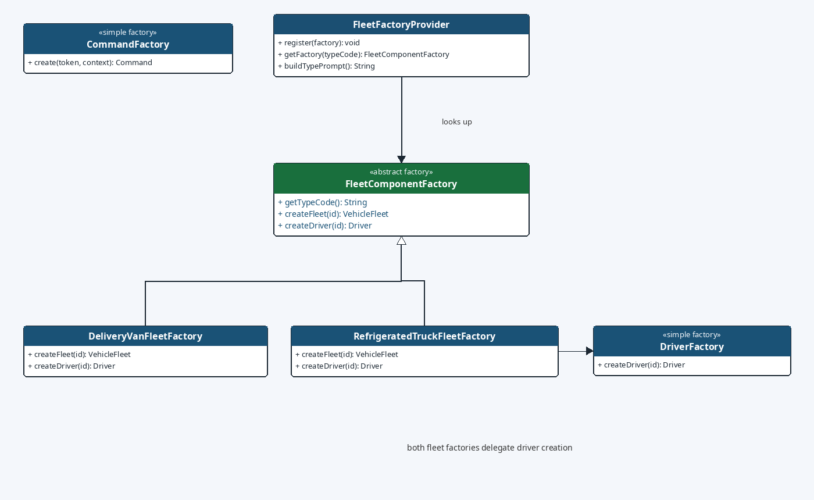
FleetComponentFactory is the abstract factory. CommandFactory and DriverFactory are simple factories.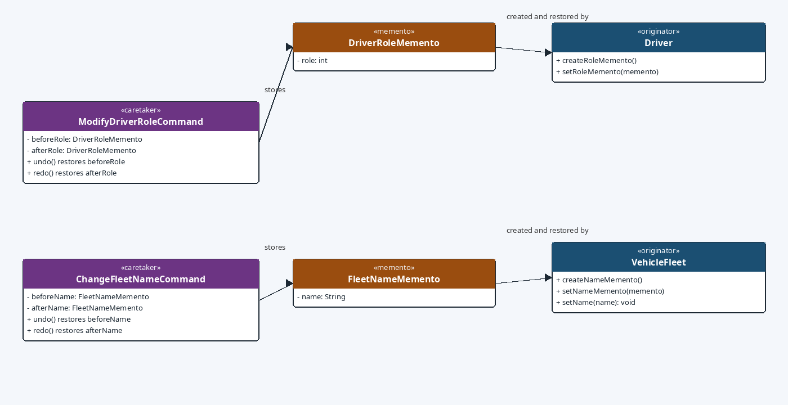
The Command pattern turns each menu action into an object with execute(). Undoable commands also implement undo() and redo(), so the history can store the command itself.
| Role | Class |
|---|---|
| Command | Command |
| Concrete command | The eleven command classes, one per menu action including undo, redo, and list |
| Invoker | Main |
| Receiver | FleetManager, and the fleet or driver the command changes |
| Client | Main together with CommandFactory |
Caretaker keeps two lists, oldest first. record appends a command and clears redo. Undo takes the last undo entry, calls undo(), and appends that command to the redo list. Redo does the opposite and does not clear the remaining redo entries. Undo and redo are themselves commands, so the menu treats them like every other action, but isUndoable() is false so they are not stored as extra history.
Create, add, and delete undo by the inverse action. Create removes the fleet it added and restores the previous current fleet. Add drops the driver. Delete inserts the same driver object at the saved index. Redo repeats the original effect on that same object, so a later command that already points at the driver or the fleet is still valid.
The text on the history list is fixed when the command succeeds. Create keeps the original fleet name, so a later rename does not rewrite the create line. Modify records the new role. Change-name records the new name. This matches the sample undo list.
Three creation jobs are kept out of the commands.
FleetComponentFactory creates the products of one fleet family: the VehicleFleet subclass and the Driver objects added to it. DeliveryVanFleetFactory and RefrigeratedTruckFleetFactory are the concrete factories. FleetFactoryProvider maps the type code the user typed onto a factory. CreateFleetCommand and AddDriverCommand ask the provider. They never call new DeliveryVanFleet or new Driver.DriverFactory. There is one driver class in the brief, so the driver product does not vary by subclass. The factory still gives one place that constructs drivers.CommandFactory.create maps a menu token to a command object. Main does not contain a list of new CreateFleetCommand and the other constructors.Abstract factory is the right choice for fleets because a new fleet variety is a new product family chosen by a code. The command that uses the family does not change. Simple factory is enough for commands because the menu tokens are fixed by the brief.
Modify role and change name overwrite a value. The old value has to be kept somewhere the command can hand back later. The Memento pattern does that without the command taking the field apart.
| Role | Modify driver role | Change fleet name |
|---|---|---|
| Originator | Driver | VehicleFleet |
| Memento | DriverRoleMemento | FleetNameMemento |
| Caretaker | ModifyDriverRoleCommand | ChangeFleetNameCommand |
On execute, the command asks the originator for a memento of the current value, then performs the change. For a role, the change goes through VehicleFleet.updateDriverRole(), so the concrete fleet still checks its own role codes. The command then takes a second memento of the new value. Undo gives the first memento back to the originator. Redo gives the second one back. The command does not call getRole() or getName() on the memento. The originator is the class that copies the saved value into setRole or setName.
Create, add, and delete are not done with a memento. Each has a direct inverse, and a memento of a whole fleet would copy drivers that other commands already know how to add and remove. The history is still one list of commands. Memento is the mechanism inside the two commands that overwrite a field. The caretaker of that history is Caretaker. The caretaker of each memento is the command that holds it.
The same add command and the same show command work for both fleets. showFleet() prints Van Driver and Courier Driver for a van fleet, and Refrigerated-Truck Driver and Cold-Chain Delivery Driver for a refrigerated fleet. updateDriverRole() in DeliveryVanFleet accepts only roles 1 and 2 as defined by that class. The refrigerated subclass accepts only its own constants, which happen to use the same numbers but mean different jobs. A caller cannot set a van role by editing the refrigerated class, and it does not need a type test.
Start the program with run.bat (Windows) or javac *.java then java Main. The menu is printed before every command. Until a fleet exists, the current-fleet line is omitted. After that it shows the current fleet id and name.
| Token | What it asks | What it does |
|---|---|---|
c | Fleet type, fleet ID, fleet name | Creates the fleet and makes it current |
s | Fleet ID | Selects the current fleet |
a | id, name and a role number | Adds a driver to the current fleet |
m | Driver ID and a role number | Changes that driver's role |
d | Driver ID | Removes that driver |
sf | Nothing | Prints the current fleet, grouped by role |
sa | Nothing | Prints one line per fleet |
cn | New name | Renames the current fleet |
u | Nothing | Undoes the newest undoable command |
r | Nothing | Redoes the newest undone command |
l | Nothing | Prints the undo list and the redo list |
x | Nothing | Prints the closing line and stops |
Role 1 on a van fleet is van driver and role 2 is courier driver. Role 1 on a refrigerated fleet is refrigerated-truck driver and role 2 is cold-chain delivery driver. The prompt shows the names that apply to the current fleet.
Testing is manual against the console, using the input of the assignment sample and further cases for errors and for undo. tests/check_sdfms.py feeds the same input to java Main and checks the messages. The screenshots below are captured from that program with the typed input echoed, which is what the command prompt shows. TC01 to TC24 are one continuous session, in the order of the sample. TC25 to TC30 are separate sessions. Every case passed.
Purpose. Create fleet F001 named CENTRAL EXPRESS and make it current.
Input. c, v, F001, CENTRAL EXPRESS.
Expected. Delivery van fleet is created. and Current fleet is changed to F001.
Result. Pass
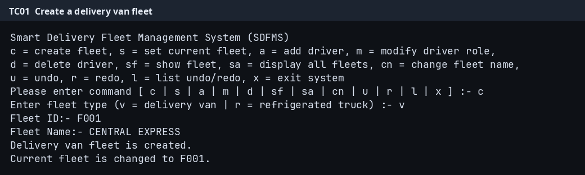
Purpose. Add a van driver and a courier driver.
Input. a / d001, Alex Chan / 1, then a / d002, Jamie Lee / 2.
Expected. The role prompt offers van driver and courier driver. Each add prints Driver is added.
Result. Pass
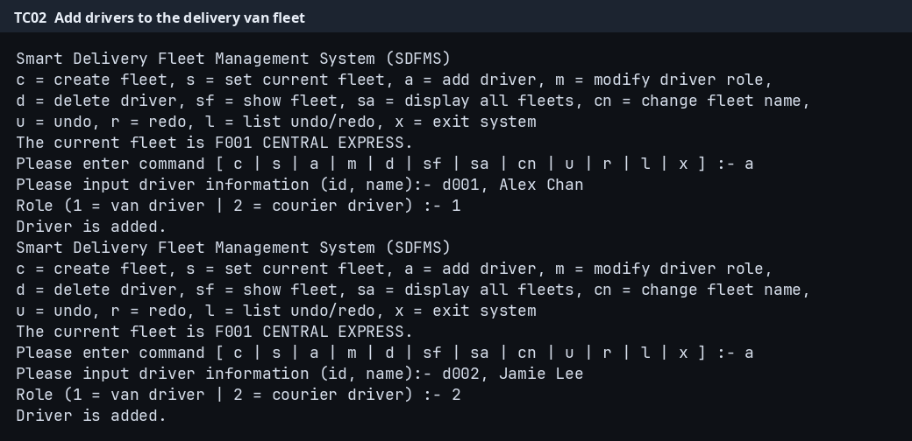
Input. sf.
Expected. Van Driver lists d001, Alex Chan. Courier Driver lists d002, Jamie Lee.
Result. Pass
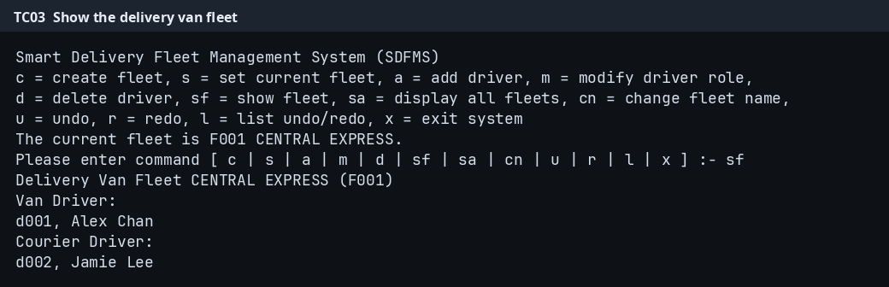
Input. c, r, F102, FROST LINE.
Expected. Refrigerated truck fleet is created. and Current fleet is changed to F102.
Result. Pass
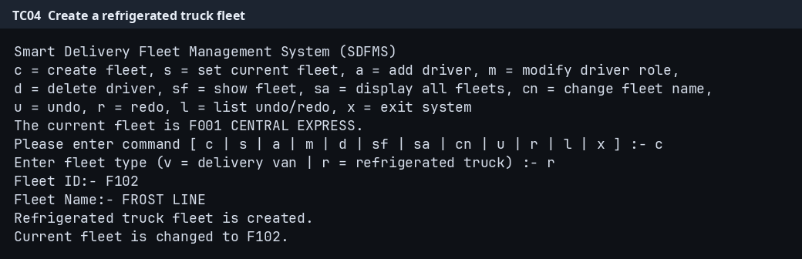
Input. sa.
Expected. The van fleet line, then the refrigerated fleet line, with no driver details.
Result. Pass
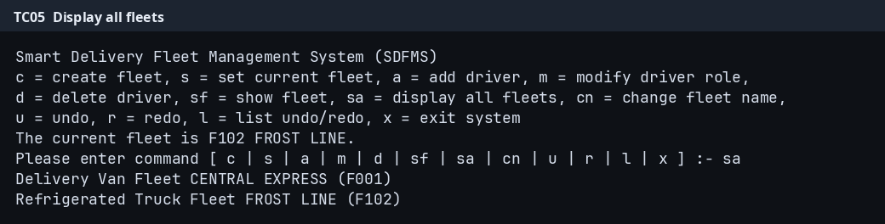
Input. d101, Morgan Wong role 1, then d102, Taylor Lam role 2.
Expected. The role prompt offers refrigerated-truck driver and cold-chain delivery driver. Both drivers are added.
Result. Pass
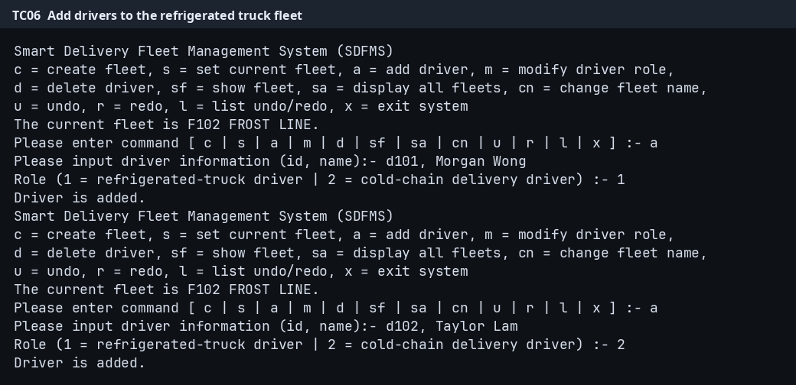
Input. sf.
Expected. Refrigerated-Truck Driver lists Morgan Wong. Cold-Chain Delivery Driver lists Taylor Lam.
Result. Pass
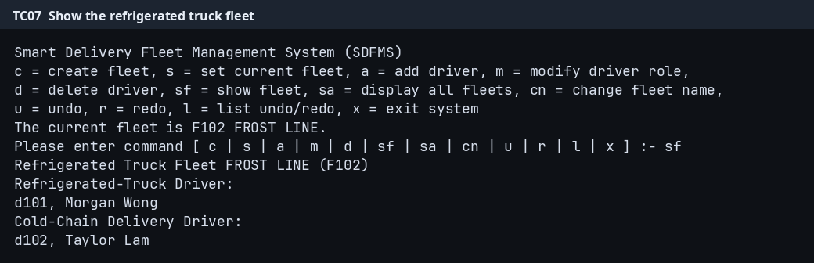
Input. s, F001.
Expected. Changed current fleet to F001. The next menu names F001 CENTRAL EXPRESS.
Result. Pass
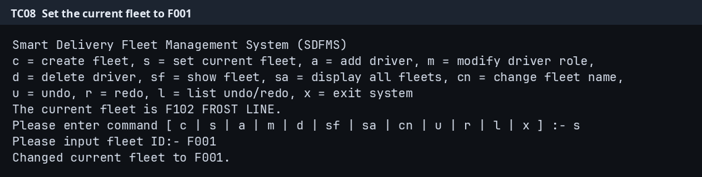
Input. sa.
Expected. Both fleets are still listed. Switching the current fleet does not reorder or drop a fleet.
Result. Pass
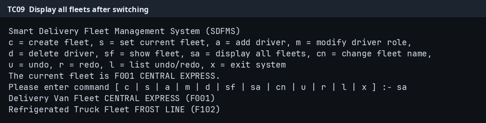
Input. m, d001, 2.
Expected. Driver role is updated. The van role prompt is used because F001 is current.
Result. Pass
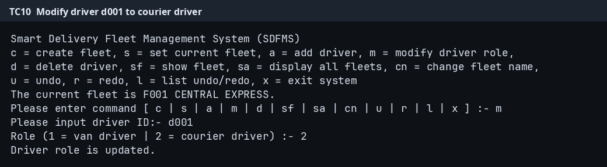
Input. sf.
Expected. Van Driver: NIL. Courier Driver lists d001 and then d002.
Result. Pass
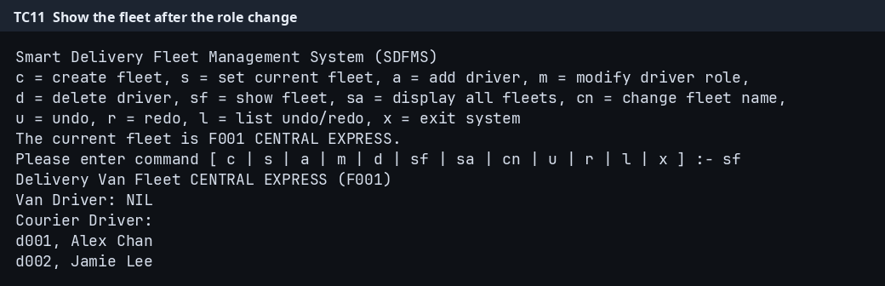
Input. d, d002.
Expected. Driver is deleted.
Result. Pass
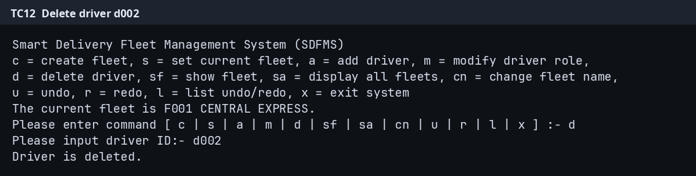
Input. sf.
Expected. Van Driver: NIL. Courier Driver lists only d001, Alex Chan.
Result. Pass
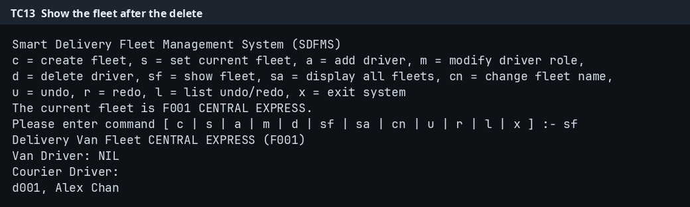
Input. cn, METRO EXPRESS.
Expected. Fleet name is updated. The next menu says F001 METRO EXPRESS.
Result. Pass
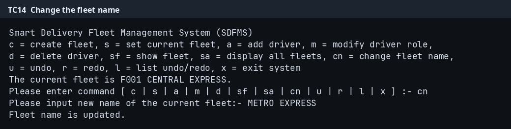
Input. sf.
Expected. The heading uses METRO EXPRESS. The driver list is unchanged.
Result. Pass
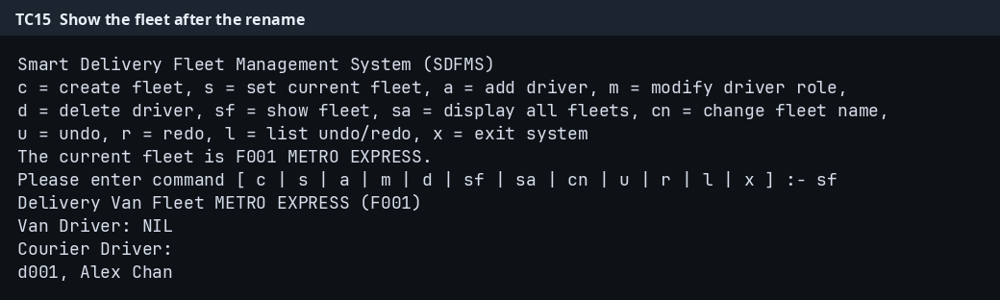
Input. l.
Expected. Nine undo lines, oldest first, from the create of F001 through Change fleet name, F001, METRO EXPRESS. The create line still says CENTRAL EXPRESS. The redo list is empty. Set-current and show are absent.
Result. Pass
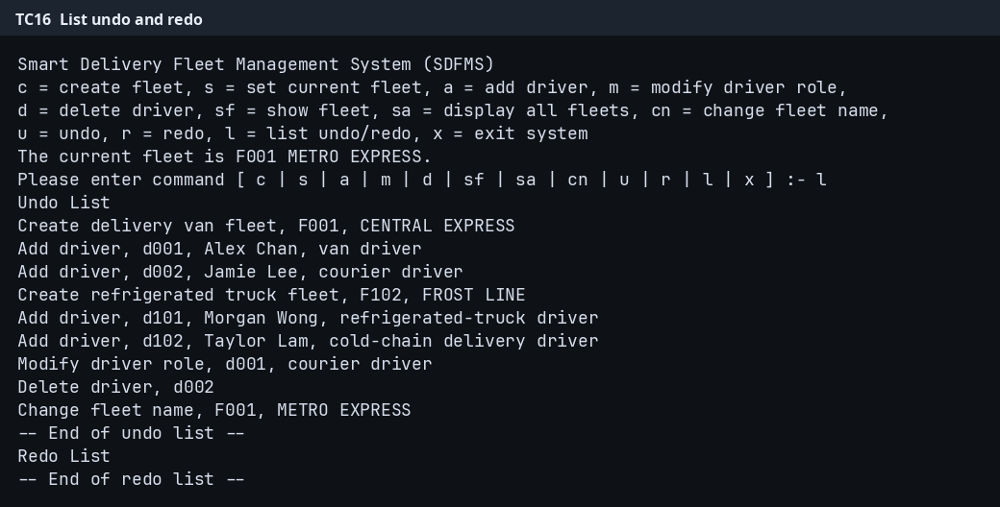
Input. u three times.
Expected. The messages undo change name, then delete driver d002, then modify role of d001. After the name is undone, the menu shows CENTRAL EXPRESS again.
Result. Pass
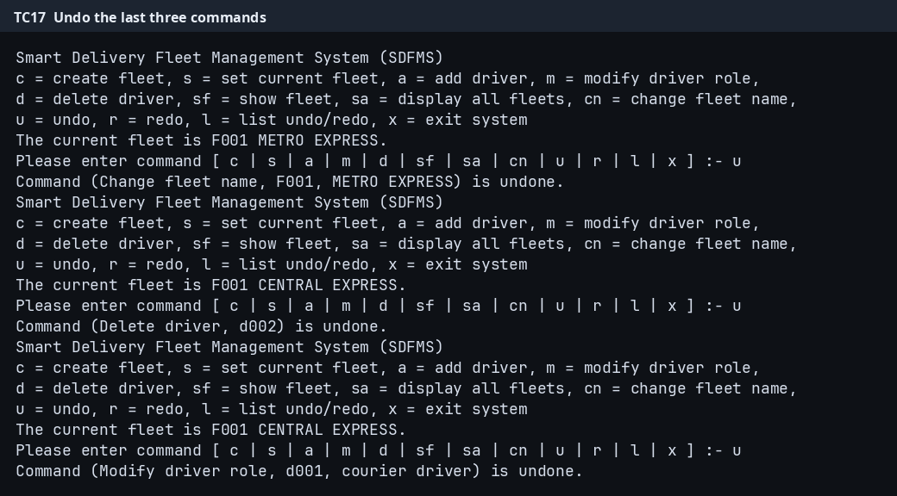
Input. sf.
Expected. The van fleet is back to its state before the three undone commands: d001 under Van Driver and d002 under Courier Driver, name CENTRAL EXPRESS.
Result. Pass
Input. r three times.
Expected. Redo modify role, then delete, then change name. This is the reverse of TC17.
Result. Pass
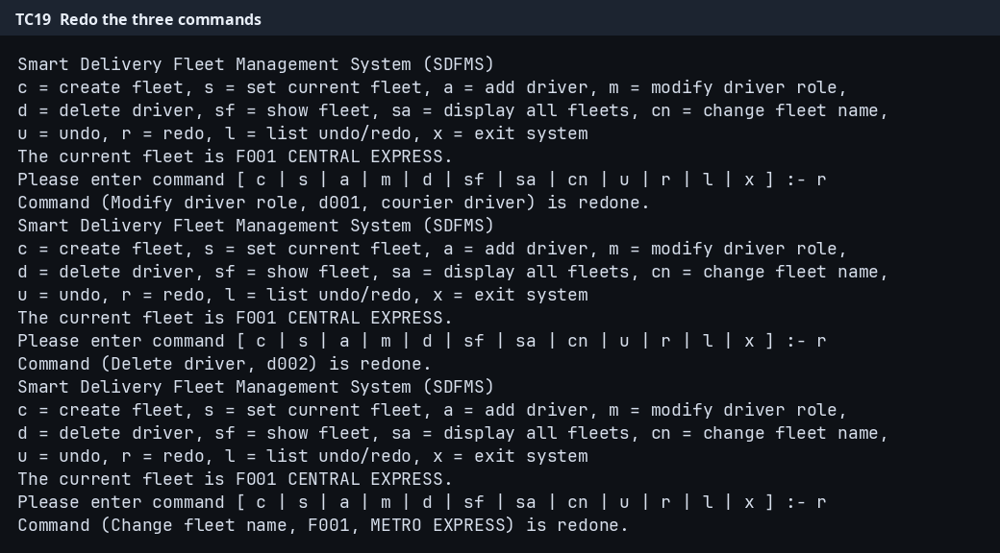
Input. sf.
Expected. METRO EXPRESS, Van Driver: NIL, and only d001 under Courier Driver.
Result. Pass
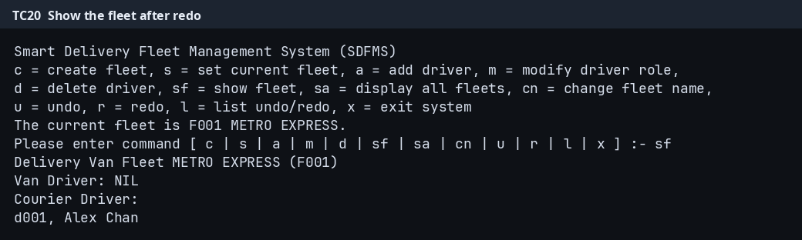
Input. s, F999.
Expected. Fleet F999 is not found! The current fleet stays F001 METRO EXPRESS.
Result. Pass
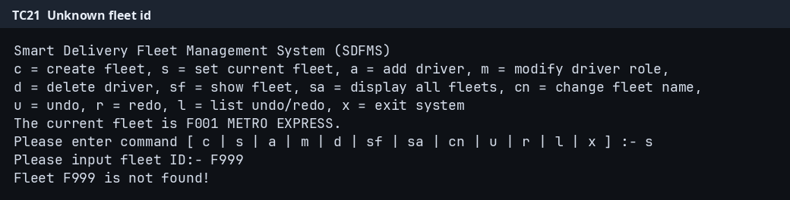
Input. d, d999.
Expected. Driver d999 is not found in the current fleet!
Result. Pass
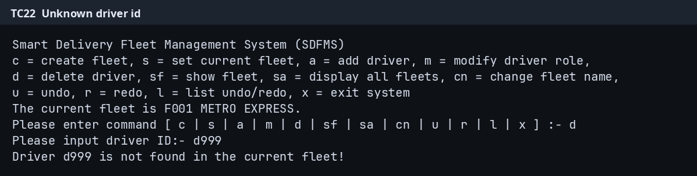
Input. q.
Expected. Invalid command! The menu is shown again.
Result. Pass
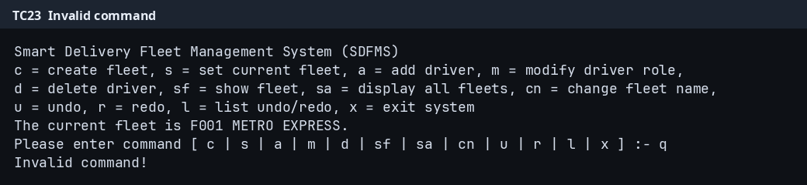
Input. x.
Expected. Thank you for using SDFMS. System terminated. The program stops.
Result. Pass
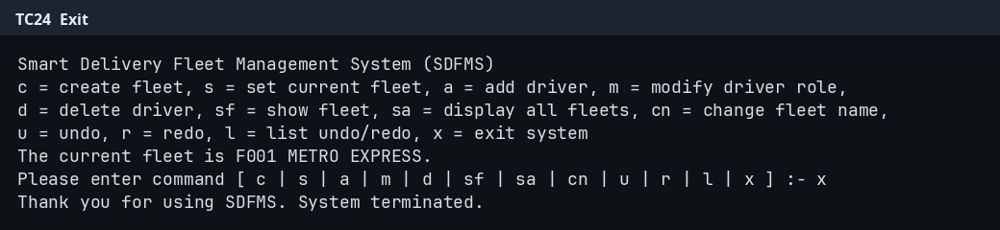
Purpose. Commands that need a fleet, an empty display-all, and empty history.
Input. a, m, d, sf, cn, sa, u, r, x on a new program.
Expected. No current fleet! for the five data commands, No fleet record., Nothing to undo!, Nothing to redo!.
Result. Pass
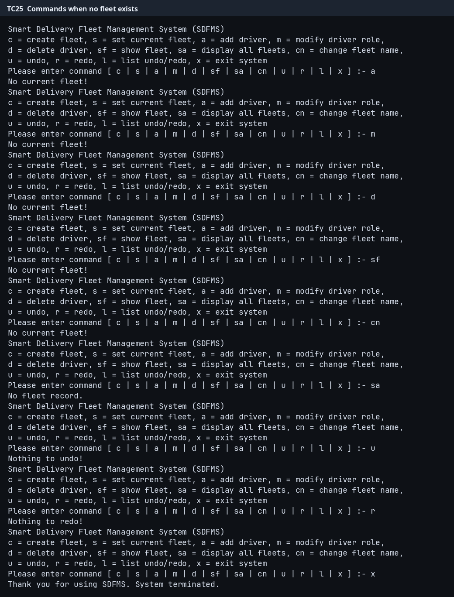
Purpose. Reject bad input without recording it.
Input. Empty fleet id; create F001; create F001 again; type code z; role 9; no-comma; , Nameless; a valid add of d001; the same id again with a valid role.
Expected. Fleet ID cannot be empty!, Fleet F001 already exists!, Invalid fleet type!, Invalid role!, Invalid driver information!, and Driver d001 already exists in the current fleet!. The valid create and the valid add still succeed.
Result. Pass
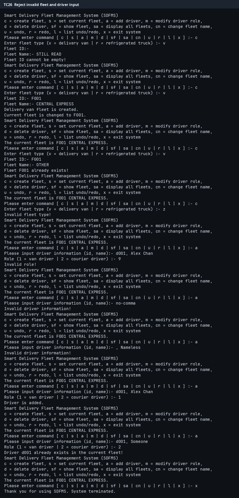
Purpose. Deleting a driver who is not at the end, then undoing, puts that driver back between the others.
Input. Add d001 (van), d002 (courier), d003 (van). Delete d002. Undo. Show.
Expected. Van Driver lists d001 then d003. Courier Driver lists d002.
Result. Pass
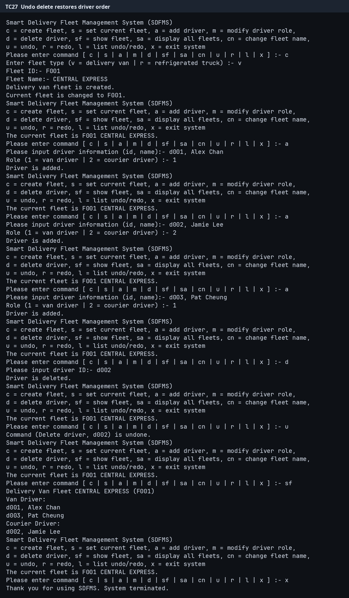
Purpose. Undoing create restores the previous current fleet. Undoing rename restores the old name of the fleet that was renamed, which is not required to be current at the time of the undo.
Input. Create F001 CENTRAL EXPRESS, rename it to METRO EXPRESS, create F102, undo, show, select F001, undo, show.
Expected. The first undo removes F102 and the current fleet is F001 METRO EXPRESS. The second undo restores the name CENTRAL EXPRESS.
Result. Pass
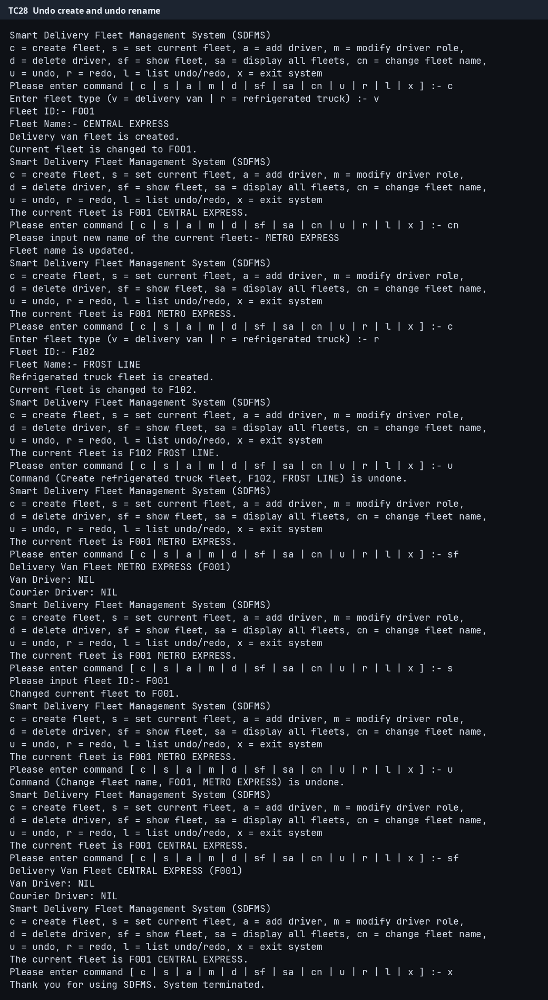
Purpose. A failed command must not change history. A new successful command must clear redo.
Input. Create a fleet, add d001, undo, list, type q, delete d999, list, add d002, list, redo.
Expected. The first two lists are the same and the redo list contains the add of d001. After d002 is added, the redo list is empty and redo prints Nothing to redo!
Result. Pass
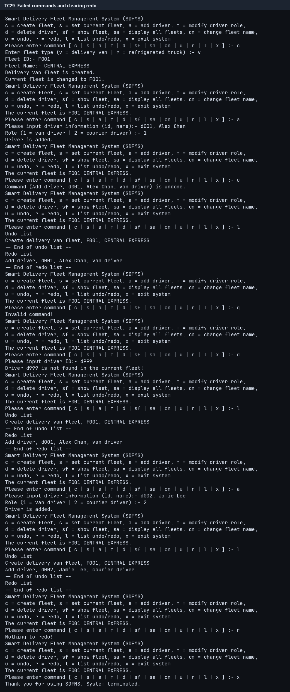
Purpose. Undo can remove every fleet. Redo rebuilds both fleets, including a cold-chain driver. Upper-case type codes are accepted.
Input. V to create F001 with d001, R to create F102 with d101 as role 2, four undos, display all, show, one extra undo, four redos, show, display all.
Expected. After four undos, display all prints No fleet record. and show prints No current fleet! The extra undo prints Nothing to undo! After four redos, F102 is current, d101 is a cold-chain delivery driver, and display all lists both fleets.
Result. Pass
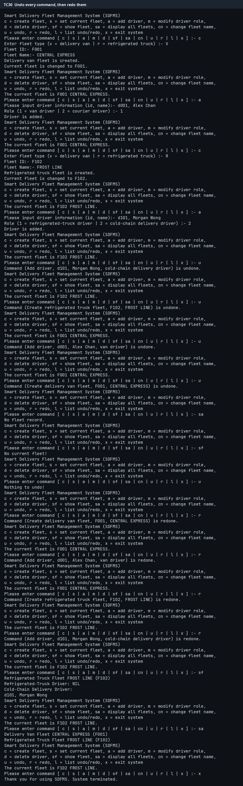
The source is the .java files next to run.bat. Each class has a comment that states the pattern role it plays. The methods required by the given class diagram are unchanged: VehicleFleet, DeliveryVanFleet, RefrigeratedTruckFleet, and Driver still have the attributes and operations in Figure 1. Extra methods are the ones the patterns need, such as saving a memento and finding a driver.
| File | Responsibility |
|---|---|
Main.java | Invoker. Menu loop and factory registration. |
Command.java, CommandFactory.java, command classes | Command pattern. |
Caretaker.java | Undo list and redo list. |
FleetManager.java, SystemContext.java | Receiver and the objects a command needs. |
VehicleFleet.java, DeliveryVanFleet.java, RefrigeratedTruckFleet.java | Fleet hierarchy and the name originator. |
Driver.java | Driver and the role originator. |
FleetNameMemento.java, DriverRoleMemento.java | Mementos. |
FleetComponentFactory.java and the three factory classes, FleetFactoryProvider.java | Abstract factory and the driver factory. |
InputNumbers.java | Reads a role number without throwing into the menu. |
run.bat | Compiles and runs the system on Windows. |
Compile and run from the folder that contains the source:
javac *.java java Main